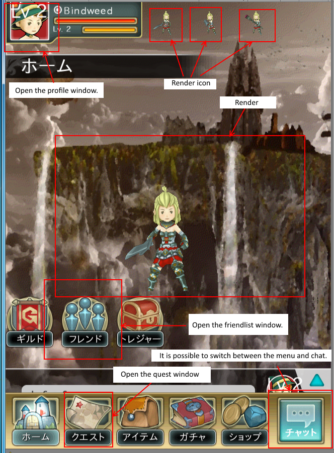

This window system’s samples¶
A preparation for run the sample¶
Compile “wra” files¶
Please be sure you have done the environment setting .
If you have done,Highlight “KsSoft/WindowResource/” folder, please select the [Right-Click] → [Export].
All “wra” files are compiled.
If errors occur, please review the environment setting .
Output all of the asset bundle¶
From the [menu] [KsTools] → [Utilty] → [Export All for Windows]
Note
If you try it in Mac environment, please confirm whether you install a command-line tool of the Xcode.
Run the sample scene¶
Run “KsSoft/Scene/Initialize.unity”.

The explanation of Sample Screens¶
The title¶
CWinTitle.cs
- KsSoft/Script/Scene/Title/CWinTitle.cs
- KsSoft/Script/Scene/Title/CWinTitleBase.cs
- KsSoft/WindowResource/CWinTitle.wra

The Home¶
CWinHome
- KsSoft/Script/Scene/Town/Home/CWinHome.cs
- KsSoft/Script/Scene/Town/Home/CWinHomeBase.cs
- KsSoft/WindowResource/CWinHome.wra
It is rendering the guild button,the friend button,the treasure button, and the center of the screen character.It is helpful on how to use the RENDER .
CWinTopPart
- KsSoft/Script/Scene/Town/CWinTopPart.cs
- KsSoft/Script/Scene/Town/CWinTopPartBase.cs
- KsSoft/WindowResource/CWinTopPart.wra
It is responsible for the character status and render icon part of the top of the screen.
It is helpful on how to use the RENDERICON .
CWinBottomPart
- KsSoft/Script/Scene/Town/CWinBottomPart.cs
- KsSoft/Script/Scene/Town/CWinBottomPartBase.cs
- KsSoft/WindowResource/CWinBottomPart.wra
It is responsible for the chat button and the toggle part of the menu button at the bottom of the screen.
CWinTabbar
- KsSoft/Script/Scene/Town/CWinTabbar.cs
- KsSoft/Script/Scene/Town/CWinTabbarBase.cs
- KsSoft/WindowResource/CWinTabbar.wra
It is responsible for the menu icon part of the bottom of the screen.

The chat window¶
CWinChat
- KsSoft/Script/Chat/CWinChat.cs
- KsSoft/Script/Chat/CWinChatBase.cs
- KsSoft/WindowResource/CWinChat.wra
CWinChatInput
- KsSoft/Script/Chat/CWinChatInput.cs
- KsSoft/Script/Chat/CWinChatInputBase.cs
- KsSoft/WindowResource/CWinChatInput.wra
CWinChatPerson
- KsSoft/Script/Chat/CWinChatPerson.cs
- KsSoft/Script/Chat/CWinChatPersonBase.cs
- KsSoft/WindowResource/CWinChatPerson.wra
This is an example of how to make the chat window.It is a sample of how to resizing the log window and displays the speaker icon.

The profile window¶
CWinProfile
- KsSoft/Script/Scene/Town/Profile/CWinProfile.cs
- KsSoft/Script/Scene/Town/Profile/CWinProfileBase.cs
- KsSoft/WindowResource/CWinProfile.wra
This is examples of horizontal list box.It is possible to page forward by swiping.In addition, it would be helpful on how to use the RENDER .
The friend list window¶
CWinFriend,CWinFriendList,CWinFriendApply,CWinFriendBalcklist
- KsSoft/Script/Scene/Town/Friend/CWinFriend.cs
- KsSoft/Script/Scene/Town/Friend/CWinFriendBase.cs
- KsSoft/WindowResource/CWinFriend.wra
- KsSoft/Script/Scene/Town/Friend/CWinFriendList.cs
- KsSoft/Script/Scene/Town/Friend/CWinFriendListBase.cs
- KsSoft/WindowResource/CWinFriendList.wra
- KsSoft/Script/Scene/Town/Friend/CWinFriendApply.cs
- KsSoft/Script/Scene/Town/Friend/CWinFriendApplyBase.cs
- KsSoft/WindowResource/CWinFriendApply.wra
- KsSoft/Script/Scene/Town/Friend/CWinFriendBalcklist.cs
- KsSoft/Script/Scene/Town/Friend/CWinFriendBalcklistBase.cs
- KsSoft/WindowResource/CWinFriendBalcklist.wra

This is an example of how to update the contents of the list box.
The friend list window¶
CWinQuest
- KsSoft/Script/Friend/CWinFriend.cs
- KsSoft/Script/Friend/CWinFriendBase.cs
- KsSoft/WindowResource/CWinFriend.wra
- KsSoft/Script/Friend/CWinFriendList.cs
- KsSoft/Script/Friend/CWinFriendListBase.cs
- KsSoft/WindowResource/CWinFriendList.wra
- KsSoft/Script/Friend/CWinFriendApply.cs
- KsSoft/Script/Friend/CWinFriendApplyBase.cs
- KsSoft/WindowResource/CWinFriendApply.wra
- KsSoft/Script/Friend/CWinFriendBalcklist.cs
- KsSoft/Script/Friend/CWinFriendBalcklistBase.cs
- KsSoft/WindowResource/CWinFriendBalcklist.wra
This is an example of how to update the contents of the list box.
The quest window¶
CWinQuest
- KsSoft/Script/Scene/Quest/CWinQuest.cs
- KsSoft/Script/Scene/Quest/CWinQuestBase.cs
- KsSoft/WindowResource/CWinQuest.wra
By giving content to the radio button, it is an example of how to behave it like a tab.